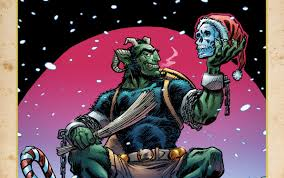

Santa’s worse half is a hairy, devil-like creature called Krampus. Legend has it that while Santa brings toys to “nice” children, Krampus’ job is to punish kids on the “naughty” list. Mostly he just frightens the children with his beastly looks, but it’s said that he throws particularly bad children into his sack, or chains them up in his basket and carts them off to Hell. People in Austria and neighboring countries often dress up as Krampus in early December and wander the streets to scare children.
Image found at Comic Beat. Tap on image for hyperlink to Comic Beat.
 In Oaxaca, Mexico, December 23 marks La Noche de Rabanos (“The Night of the Radishes”), a festival in which merchants and artisans
sell radishes that have been intricately carved to depict nativity scenes, local wildlife, familiar architecture and other relevant displays.
The radish carvings are sold as Christmas centerpieces, and the creator of the best radish design wins a monetary prize.
In Oaxaca, Mexico, December 23 marks La Noche de Rabanos (“The Night of the Radishes”), a festival in which merchants and artisans
sell radishes that have been intricately carved to depict nativity scenes, local wildlife, familiar architecture and other relevant displays.
The radish carvings are sold as Christmas centerpieces, and the creator of the best radish design wins a monetary prize.
Image found at Cutlure Trip. Tap on image for hyperlink to Cutlure Trip.
 In the United States, we associate Christmas with ham or figgy pudding, but in Japan, it’s all about Kentucky Fried Chicken.
An estimated 3.5 million Japanese families eat fried chicken on Christmas Eve thanks to a marketing stunt by KFC in the 1970s
called Kurisumasu ni wa Kentakkii (“Kentucky for Christmas”). Christians make up a very small percentage of the Japanese population,
so this campaign made up for a lack of Christmas holiday traditions. The KFC Christmas Meal is so popular, many customers pre-order
their dinners — which include fried chicken, cake and champagne — months in advance.
In the United States, we associate Christmas with ham or figgy pudding, but in Japan, it’s all about Kentucky Fried Chicken.
An estimated 3.5 million Japanese families eat fried chicken on Christmas Eve thanks to a marketing stunt by KFC in the 1970s
called Kurisumasu ni wa Kentakkii (“Kentucky for Christmas”). Christians make up a very small percentage of the Japanese population,
so this campaign made up for a lack of Christmas holiday traditions. The KFC Christmas Meal is so popular, many customers pre-order
their dinners — which include fried chicken, cake and champagne — months in advance.
Image found at Groovy History. Tap on image for hyperlink to Groovy History.